Baseline corrections
This tutorial shows how to make baseline corrections with SpectroChemPy using the Baselineclass processor - which allows performing all the implemented correction operations with a maximum of flexibility and settings - or using equivalent SpectroChemPy API or NDDataset methods which allow performing specific corrections operations in a more direct way.
As prerequisite, the user is expected to have read the Import and Import IR tutorials.
We first import spectrochempy
[1]:
import spectrochempy as scp
![](data:image/png;base64,iVBORw0KGgoAAAANSUhEUgAAABgAAAAYCAYAAADgdz34AAAAAXNSR0IArs4c6QAAAAlw
SFlzAAAJOgAACToB8GSSSgAAAetpVFh0WE1MOmNvbS5hZG9iZS54bXAAAAAAADx4OnhtcG1ldGEgeG1sbnM6eD0iYWRvYmU6bnM6
bWV0YS8iIHg6eG1wdGs9IlhNUCBDb3JlIDUuNC4wIj4KICAgPHJkZjpSREYgeG1sbnM6cmRmPSJodHRwOi8vd3d3LnczLm9yZy8x
OTk5LzAyLzIyLXJkZi1zeW50YXgtbnMjIj4KICAgICAgPHJkZjpEZXNjcmlwdGlvbiByZGY6YWJvdXQ9IiIKICAgICAgICAgICAg
eG1sbnM6eG1wPSJodHRwOi8vbnMuYWRvYmUuY29tL3hhcC8xLjAvIgogICAgICAgICAgICB4bWxuczp0aWZmPSJodHRwOi8vbnMu
YWRvYmUuY29tL3RpZmYvMS4wLyI+CiAgICAgICAgIDx4bXA6Q3JlYXRvclRvb2w+bWF0cGxvdGxpYiB2ZXJzaW9uIDIuMS4wLCBo
dHRwOi8vbWF0cGxvdGxpYi5vcmcvPC94bXA6Q3JlYXRvclRvb2w+CiAgICAgICAgIDx0aWZmOk9yaWVudGF0aW9uPjE8L3RpZmY6
T3JpZW50YXRpb24+CiAgICAgIDwvcmRmOkRlc2NyaXB0aW9uPgogICA8L3JkZjpSREY+CjwveDp4bXBtZXRhPgqNQaNYAAAGiUlE
QVRIDY1We4xU1Rn/3XPuYx47u8w+hnU38hTcuoUEt/6D2y4RB0ME1BoEd9taJaKh9CFiN7YGp7appUAMNmktMZFoJTYVLVQ0smsy
26CN0SU1QgsuFAaW3WVmx33N677O6XfuyoIxTXqSO/fec+75fd93vt/3/UbDV0aKSZmCpkFMLz3T9utuu2N+o98aDSMBKVAo89z5
y+zEz3ZafcCOfvWdlGCalqKn1Bf71CygTd+mf1esSOnpdMpTb+vWpTZuWVfe3jLPa5tzHYNm0T5N0gpdkkHaDBeGBU6d1/t/fyS8
+/CbqdfUvmsx1PuMgc2bNxv79u1zgd31r+7JH1jbIZKxWRXAcYUQ8IWvBfBXNjEuJWPgMA02NR7C3/pYT9fjdZ3A9tGrWF8YSJHn
qcDz3y7q2T967PZv+gnYJdd1mEZ+62zGDQV/dQgKhmLzDNOXCEWM3j6eTT5Y3w78dOBKJLR1PQf+4ivPj76UPZnssBN+wbM9Aet/
AV81Mf1EEULXYfOobvX2WWQk0aoioXwwSmirOlioY0mu8BIouzYl7P8GV3vpqCCEZvlFz769w08oLDWvyKIyL1asSm28d6WfzA97
ztvvV1kexUMsmhlkULEkuGYmFYC6AvfUrITnwUKl5K79lkjeSSRRTCTbQPd95e1WzMbZSya74XoXAxctCllCnbECMOjZNGRwvzIX
nD85wbkMmKK+U045Dtdi8Qp+SAxU2GTg2bYlC9224pgvmSb54vkVTBQYyhUt2KjAMyMmPjwRQW5Mh2WKwJhlBh6jVGagFM84wZnQ
4bpC0Rt4pk1PbSt0NDcxDA5xryosDHWgtbM0DGZDWLSoiDMDYeQnGVrmOThxLozB0RAaahzkJzjKNqcIQBymJFMkOlN8Dqjpg0XY
Tx5xO/QbmmUrqIjGJznq47TqTaClKYfjp+PInLMwnOdYvtQBZ2XcunQY+VwIo4U4muoFEjVEFE6lQyEUKzHYfgQG9ylCyngU+Cxj
tOqxCDGHcCsOMCs6iQul5ZiStdATYxjMZXDLTUVwLY8Jey4uOh2IxjwsrP8UXJYxUrkZrghBahzV5iXU6gNkq0Z1EzIsUBUSCV2n
EOHo0LVxHCpuxabJJdhi5PFnvw5vLXwXIfNZvD/+JNo/X40NegE54sUaazl+UL8XD1x+FB9Ijjt4EQfdGN6J/x131LwIV9ap/AYs
0x1fz1ZKFbh6A7qKy/By9Dg6G36Ep91vUJJ15Cqr0Z67E8/HzmBrw1OwxWyM+3Mo6BAuSB17oyfx0Oyl2DN0Hqs/70Cx6hBCvESF
UY1ShWXZZEE7OTAYxZzaPH4TuoiusZvRnunFy2NbiHYuBp2vB66srX4vMEjpRKPxKXmnoQ4+Mn4DPiv8CYcrs3GfNUXJLtM+alSO
hrMj/KT+wBNW3+E/2liywNO3iSflbaFva/+stGDTxE0E9Sjaox8HBhxpEamzMGSEaFKg+mjEddzDh1MxTDq3YV1kGBsjfwW3S9Cq
anjmko+ndlb1UR3s6K8JlfphNWq9Ew/7c61T2BB/EbcaNkb8GBaE0tANH7/M34PLdhJDzjIcL9xPbdTG6zyM72Y+wXPHmvB489No
fm0b5HnbQ9Rgp/7DSSd29AeVvPeNyK6JcYl/yQVi5dBjuGvoV/gaJe47s45QUxrDmcYX0MBsdF7egvXZ7+O0vZA4X8QmOQWjlSK7
RDz5wIM30gp9UbWcGjXxhzdDu1SiNSpx6kcQB57rPnr/3dlkZarWLnlRq5oPET1dOCIOk4wALib9eeS5iygfhkd09H0DWphB/+gs
+PcOAS+ssrFmmXXgVfR0de9cpbAJfH3Q1jofW9DZk56dDcVsq9YcsoUMEd1qyLoT3BX1YiyHMJuk97hyjqIoE91t+NcTLeN0ZrfM
oXatZbu6G0h4VG+ibqq0IJVK6cAjo6serG3vSUezCMct0yQeSOFJSUImqb2qbknUpDqlZxE0QZ+ZUpSlZx79h4Nda6zef9dlk121
JDjbR5XggPRZlRnS6bRQRtLpn4++cuie/Yvn2svmNxuLw9WCcYIl4fEoTEGiSTUqJdfgU+8ROqf1iMkLzS389YtNPXc/PH8l8ONB
JZkHD+4JtD04HmVEDWWErmBhzV2/2LB1bemJG6krzv2S6NOHUgtEP0Oif5pE/3fHoruP7N8RiP61GArzSwbUhJJQpXJKiKbfr/3b
IhKq76sKPUdF9NW/LSqfSn6vjv8C45H/6FSgvZQAAAAASUVORK5CYII=)
|
SpectroChemPy's API - v.0.6.11.dev82 © Copyright 2014-2025 - A.Travert & C.Fernandez @ LCS |
Then we load a FTIR series of spectra on which we will demonstrate theprocessor capabilities
[2]:
# loading
X = scp.read("irdata/nh4y-activation.spg")
# set figsize preference
prefs = X.preferences
prefs.figure.figsize = (8, 4)
# plot the spectra
_ = X.plot()
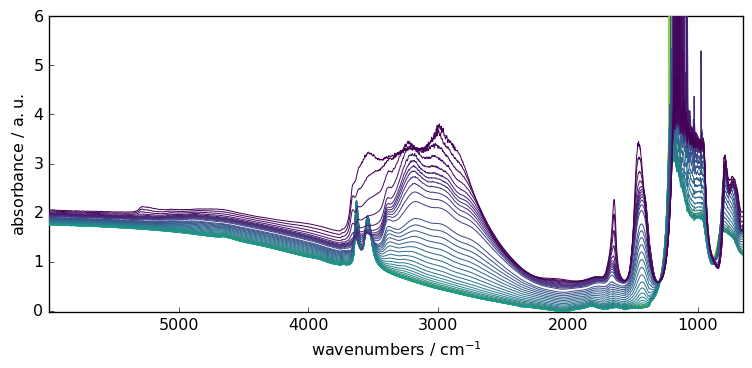
The Baseline processor
The Baseline class processor proposes several algorithms (models) for Baseline determination.
detrend: Remove polynomial trend along a dimension from dataset.polynomial: Perform a polynomial interpolation on pretermined regionsasls: Perform an Asymmetric Least Squares Smoothing baseline correction.snip: Perform a Simple Non-Iterative Peak (SNIP) detection algorithm.rubberband: Perform a Rubberband baseline correction.
How it works?
Basically, determining a correct baseline, belongs to the decomposition type methods (See Analysis):
The sequence of command is thus quite similar:
Initialize an instance of the processor and set the models parameters
Fit the model on a given dataset to extract a
baseline.Transform the original spectra by subtracting the determined baseline.
Example
Let’s fit a simple rubberband correction model. This is actually the only model in SpectroChemPy which is fully automatic (no parameter).
[3]:
# instance initalisation and model selection
blc = scp.Baseline()
blc.model = "rubberband"
# model can also be passed as a parameter
blc = scp.Baseline(model="rubberband")
# fit the model on the first spectra in X (index:0)
blc.fit(X[0])
# get the new dataset with the baseline subtracted
X1 = blc.transform()
# plot X, X1 and the baseline using the processor plot method
_ = blc.plot()
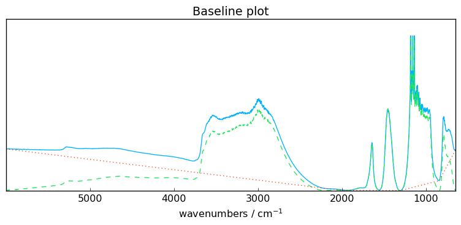
One can also use the property corrected instead of the method transform(), both giving equivalent results.
[4]:
X1 = blc.corrected
Of course, we can also apply the model to the complete series sequentially
[5]:
# fit the model on the full X series
blc.fit(X)
# get the new dataset with the baseline subtracted
X2 = blc.transform()
# plot the baseline corrected series of spectra
_ = X2.plot()
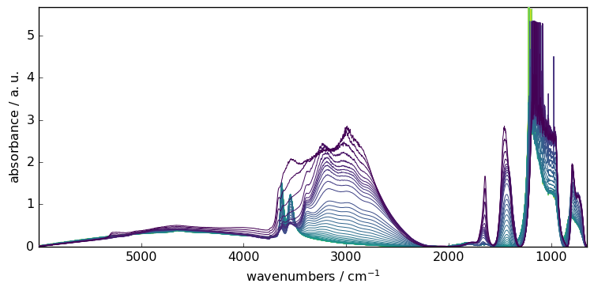
The baseline models implemented in SpectroChemPy are able to handle missing data.
For instance, let’s condider masking the saturated region of the spectra.
[6]:
X[:, 891.0:1234.0] = scp.MASKED
_ = X.plot()
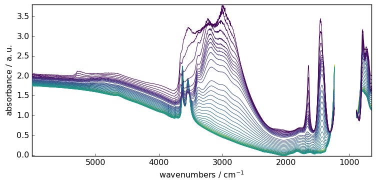
Fitting the baseline is done transparently
[7]:
blc.fit(X)
X3 = blc.transform()
_ = X3.plot()
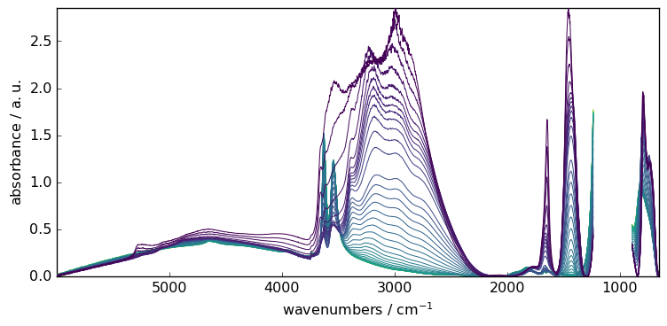
Overview of the other model
Polynomial
With this model, a polynomial is fitted using range of coordinate which are considered as belonging to the baseline.
The first step is then to select the various regions that we expect to belong to the baseline.
Then the degree of the polynomial is set (using the
orderparameters). A special cas is encountered, iforderis set to “pchip”. In this case a piecewise cubic hermite interpolation is performed in place of the classic polynomial interpolation.
Range selection
Each spectral range is defined by a list of two values indicating the limits of the spectral ranges, e.g. [4500., 3500.] to select the 4500-3500 cm\(^{-1}\) range. Note that the ordering has no importance and using [3500.0, 4500.] would lead to exactly the same result. It is also possible to formally pick a single wavenumber 3750..
[8]:
ranges = (
[5900.0, 5400.0],
4550.0,
[4230.0, 4330.0],
3780,
[2100.0, 2000.0],
[1550.0, 1555.0],
1305.0,
840.0,
)
Polynomial of degree: order
In this case, the base methods used for the interpolation are those of the polynomial module of spectrochempy, in particular the numpy.polynomial.polynomial.polyfit() method.
[9]:
# set the model
blc.model = "polynomial"
# set the polynomial order
blc.order = 7
# set the ranges
blc.ranges = ranges
# fit the model on the first spectra X[0]
blc.fit(X[0])
# get and plot the corrected dataset
X4 = blc.transform()
ax = blc.plot()
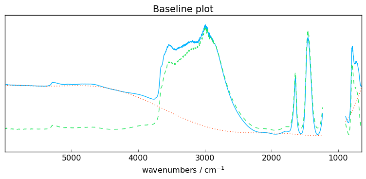
The method show_regions can be used to display the regions used for the baseline
[10]:
blc.show_regions(ax)
To examine which ranges has been used, use the used_ranges attribute. Note, the extrema have been automatically added.
[11]:
blc.used_ranges
[11]:
[[np.float64(649.904), np.float64(651.832)],
[840.0, 840.0],
[1305.0, 1305.0],
[1550.0, 1555.0],
[2000.0, 2100.0],
[3780.0, 3780.0],
[4230.0, 4330.0],
[4550.0, 4550.0],
[5400.0, 5900.0],
[np.float64(5997.627), np.float64(5999.556)]]
Polynomial and pchip interpolation
An interpolation using cubic Hermite spline interpolation can be used: order='pchip' (pchip stands for Piecewise Cubic Hermite Interpolating Polynomial).
This option triggers the use of scipy.interpolate.PchipInterpolator() to which we refer the interested readers.
[12]:
# set the polynomial order to 'pchip'
blc.order = "pchip"
# fit the model on the first spectra X[0]
blc.fit(X[0])
# get and plot the corrected dataset
X5 = blc.transform()
_ = blc.plot()
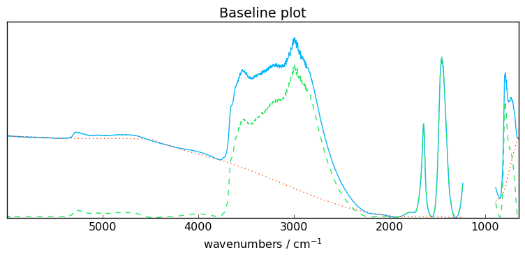
AsLS : Asymmetric Least Squares Smoothing baseline correction
Example:
[13]:
blc.model = "asls"
blc.lamb = 10**9
blc.asymmetry = 0.002
blc.fit(X)
X6 = blc.transform()
_ = X6.plot()
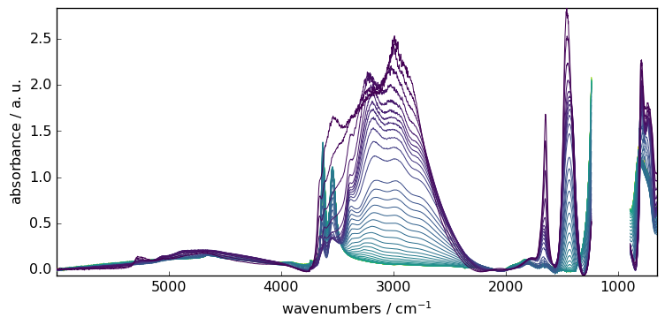
SNIP : Perform a Simple Non-Iterative Peak (SNIP) detection algorithm
Example:
[14]:
blc.model = "snip"
blc.snip_width = 200
blc.fit(X)
X7 = blc.transform()
_ = X7.plot()
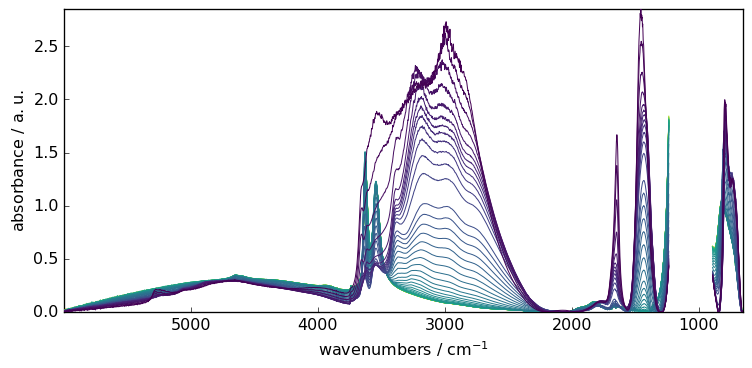
Multivariate approach
In the previous example, we have fitted the model sequentially on all spectra.
Another useful approach is multivariate, where SVD/PCA or NMF is used to perform a dimensionality reduction into principal components (eignenvectors), followed by a model fitting on each of these components. This obviously require a 2D dataset, so it is not applicable to single spectra.
The ‘multivariate’ option is useful when the signal to noise ratio is low and/or when baseline changes in different regions of the spectrum are different regions of the spectrum are correlated. It consists of (i) modeling the baseline regions by a principal component analysis (PCA), (ii) interpolating the loadings of the first principal components over the whole spectrum and (iii) model the baselines of the spectra from the product of the PCA scores and the interpolated loadings. (For details: see Vilmin et al. Analytica Chimica Acta 891 (2015)).
If this option is selected, the user must also set the n_components parameter, i.e. the number of principal components used to model the baseline. In a sense, this parameter has the same role as the order parameter, except that it affects how the baseline fits the selected regions on both dimensions: wavelength and acquisition time. In particular, a large value of n_components will lead to an overfitting of the baseline variation with time and lead to the same result as the while a value that is too small may fail to detect a main component underlying the baseline variation over time. Typical optimal values are n_components=2 or n_components=3.
Let’s demonstrate this on the previously used dataset.
[15]:
# set to multivariate (SVD by default)
blc.multivariate = True
# set the model
blc.model = "polynomial"
blc.order = 10
# Set the number of components
blc.n_components = 3
# Fit the model on X
blc.fit(X)
# get the corrected dataset
X8 = blc.transform()
# plot the result
_ = X8.plot()
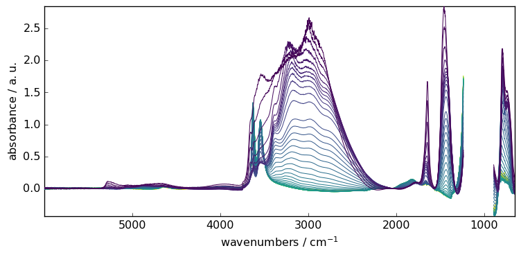
Finally, for all the example shown above, we have used the same instance of Baseline. It may be a problem to remember which setting has been done, and may impact new output. To know the actual status, one can use the params method. This will list all actual parameters.
[16]:
blc.params()
[16]:
{'asymmetry': 0.002,
'include_limits': True,
'lamb': 1000000000.0,
'lls': True,
'max_iter': 50,
'model': 'polynomial',
'multivariate': True,
'n_components': 3,
'order': 10,
'ranges': [[np.float64(649.904), np.float64(651.832)],
[840.0, 840.0],
[1305.0, 1305.0],
[1550.0, 1555.0],
[2000.0, 2100.0],
[3780.0, 3780.0],
[4230.0, 4330.0],
[4550.0, 4550.0],
[5400.0, 5900.0],
[np.float64(5997.627), np.float64(5999.556)]],
'snip_width': 200,
'tol': 0.001}
Baseline correction using NDDataset or API methods
The Baseline processor is very flexible but it may be useful to use simpler way to compute baseline. This is the role of the methods described below (which call the Baseline processor transparently).
As an example, we can now use a dataset consisting of 80 samples of corn measured on a NIR spectrometer. This dataset (and others) can be loaded from http://www.eigenvector.com.
[17]:
A = scp.read("http://www.eigenvector.com/data/Corn/corn.mat")[4]
Add some label for a better reading of the data axis
[18]:
A.title = "absorbance"
A.units = "a.u."
A.x.title = "Wavelength"
A.x.units = "nm"
Now plot the original dataset A:
[19]:
prefs = A.preferences
prefs.figure.figsize = (7, 3)
prefs.colormap = "magma_r"
_ = A.plot()
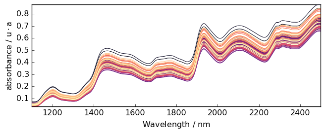
Detrending
It is quite clear that this spectrum series has an increasing trend with both a vertical shift and a drift.
The detrend method can help to remove such trends (Note that we did not talk about this before, but the model is also available in theBaselineprocessor: model='detrend')
Constant trend
When the trend is simply a shift one can subtract the mean absorbance to each spectrum.
[20]:
A1 = A.detrend(order="constant") # Here we use a NDDataset method
_ = A1.plot()
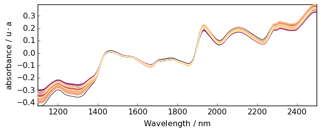
Linear trend
But here the trend is clearly closer to a linear trend. So we can use a linear correction with A.detrend(order="linear") or simply A.detrend() as “linear” is the default.
[21]:
A2 = scp.detrend(
A
) # Here we use the API method (this is fully equivalent to the NDDataset method)
_ = A2.plot()
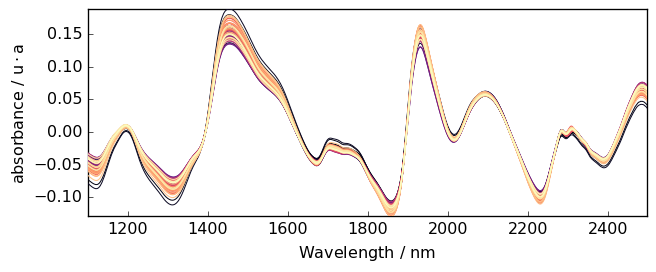
Polynomial trend
If a higher degree of polynomial is necessary, it is possible to use a nonnegative integer scalar to define order (degree). Note that for degree 2 and 3, the “quadratic” and “cubic” keywords are also available to define 2 and 3-degree of polynomial.
[22]:
A3 = A.detrend(order="quadratic") # one can also use `order=2`
_ = A3.plot()
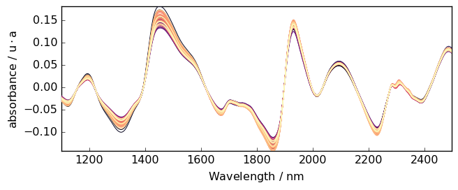
Detrend independently on several data segment
For this we must define a vector (bp) which contains the location of the break-points, which determine the limits of each segments.
For example, let’s try on a single spectrum for clarity:
[23]:
# without breakpoint
R = A[0]
R1 = R.detrend()
# plots
_ = R.plot(label="original")
R1.plot(label="detrended", clear=False)
ax = (R - R1).plot(label="trend", clear=False, cmap=None, color="red", ls=":")
ax.legend(loc="upper left")
_ = ax.set_ylim([-0.3, 0.8])
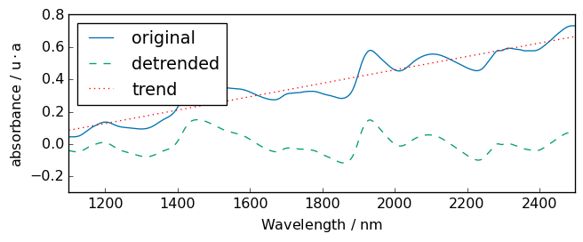
Note
we use float number to define breakpoint as coordinate. Integer number would mean that we use indice starting at 0 (not the same thing!). in this case, indice 1856 does not exist as the size of the x axis is 700.
[24]:
# with breakpoints
bp = [1300.0, 1856.0] # warning must be float to set location, in int for indices
R2 = R.detrend(breakpoints=bp)
_ = R.plot()
R2.plot(clear=False)
ax = (R - R2).plot(clear=False, cmap=None, color="red", ls=":")
_ = ax.set_ylim([-0.3, 0.8])
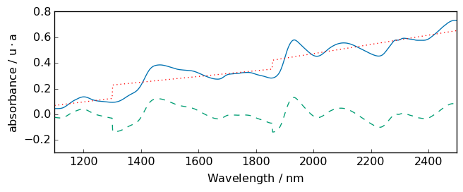
basc
Make a baseline correction using the Baseline class.
Examples:
Automatic linear baseline correction
When the baseline to remove is a simple linear correction, one can use basc without entering any parameter. This performs an automatic linear baseline correction. This is close to detrend(oreder=1), exceot that the linear baseline is fitted on the the spectra limit to fit the baseline. This is useful when the spectra limits are signal free.
[25]:
Aa = A.basc()
_ = Aa.plot() # range are automatically set to the start and end of the spectra, model='polynomial', order='linear'
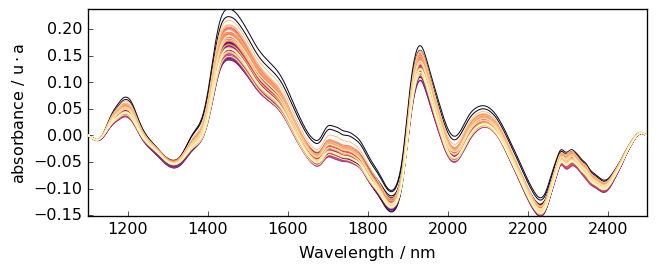
All parameters of Baseline can be used in basc. It is thus probably quite conveninent if one wants to write shorter code.
Rubberband
Method such as ruberband, asls and snip can be called directly.
Example:
[26]:
Ab = scp.rubberband(A)
_ = Ab.plot()
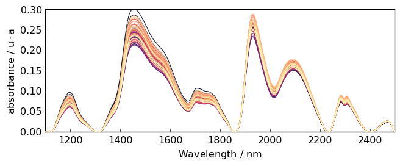
Code snippet for ‘advanced’ baseline correction
The following code in which the user can change any of the parameters and look at the changes after re-running the cell:
[27]:
# Create a baseline instance and give it a name (here basc)
# ---------------------------------------------------------
basc = scp.Baseline()
# user defined parameters
# -----------------------
basc.ranges = ( # ranges can be pair or single values
[5900.0, 5400.0],
[4000.0, 4500.0],
4550.0,
[2100.0, 2000.0],
[1550.0, 1555.0],
[1250.0, 1300.0],
[800.0, 850.0],
)
basc.interpolation = "pchip" # choose 'polynomial' or 'pchip'
basc.order = 5 # only used for 'polynomial'
basc.method = "sequential" # choose 'sequential' or 'multivariate'
basc.n_components = 3 # only used for 'multivariate'
# fit baseline, plot original and corrected NDDatasets and ranges
# ---------------------------------------------------------------
_ = basc.fit(X)
Xc = basc.corrected
axs = scp.multiplot(
[X, Xc],
labels=["Original", "Baseline corrected"],
sharex=True,
nrow=2,
ncol=1,
figsize=(7, 6),
dpi=96,
)
basc.show_regions(axs["axe21"])
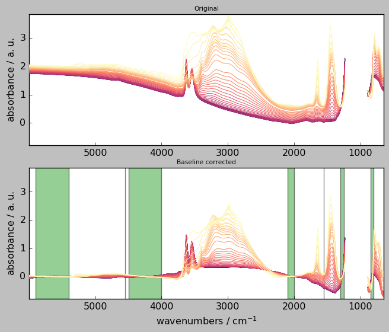
Exercises
basic:
write commands to subtract (i) the first spectrum from a dataset and (ii) the mean spectrum from a dataset
write a code to correct the baseline of the last 10 spectra of the above dataset in the 4000-3500 cm\(^{-1}\) range
intermediate:
what would be the parameters to use in ‘advanced’ baseline correction to mimic ‘detrend’ ? Write a code to check your answer.
advanced:
simulate noisy spectra with baseline drifts and compare the performances of
multivariatevssequentialmethods